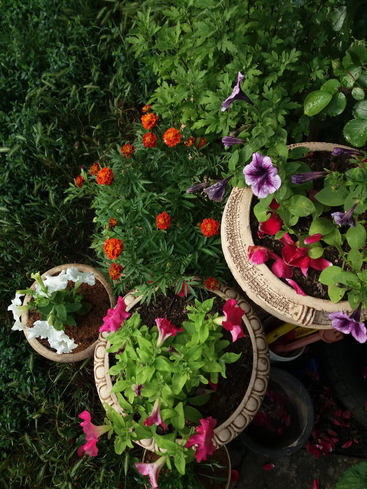
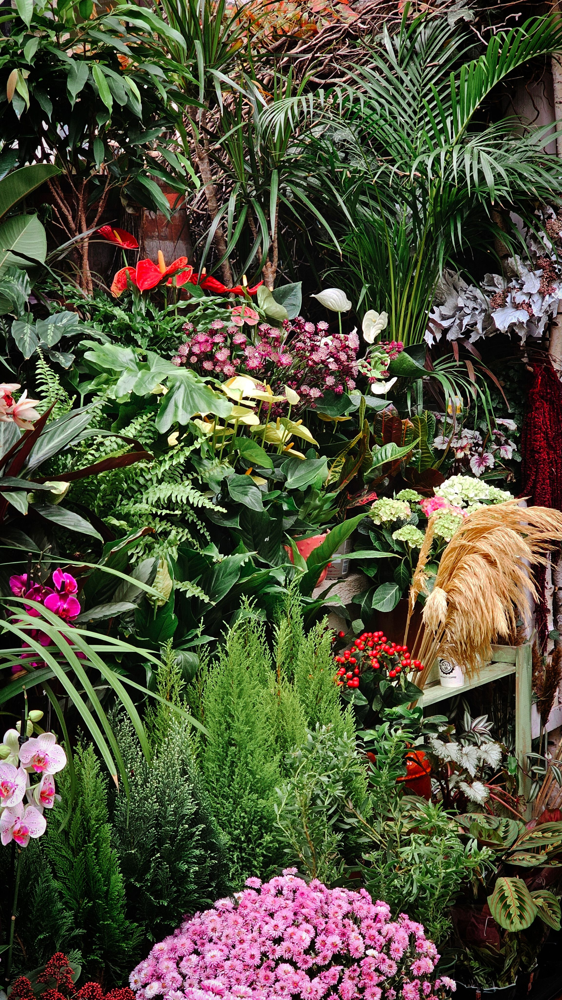

In This Article
- Introduction
- Identify Which Garden Areas Need Privacy
- Use Plants, Hedges, and Climbers Carefully
- Combine Structures and Layout for Balanced Privacy
- Choose Privacy Materials That Last Outdoors
- Design Privacy Without Making the Garden Feel Closed
- Maintain Hedges, Fences, and Screens
- Privacy Solutions for Different Garden Areas
- Common Mistakes When Seeking More Privacy
- Frequently Asked Questions
- Conclusion
Introduction
Discover how to improve garden privacy with plants, trellises, fences, and a balanced layout that preserves light and ventilation.
Before making changes, observe the actual conditions of the space, define the problem you want to solve, and prioritize measures with the greatest impact. This planning helps avoid impulse purchases and solutions that are difficult to maintain.
The best privacy strategy does not necessarily close the entire garden. A targeted solution can protect the places you use most while preserving openness, daylight, airflow, and views you want to keep.
Whenever work involves structures, working at height, heavy containers, or permanent installations, use safe methods and hire qualified help when necessary.
Identify Which Garden Areas Need Privacy
Before installing a tall fence or planting a hedge, identify exactly where unwanted views come from. Privacy does not always require enclosing the whole perimeter. A single angle from a neighboring window, street, or nearby terrace may be the real problem affecting the area where you spend most of your time.
Stand at the main garden locations: the outdoor table, loungers, play area, and doors leading from the house. Observe the height and direction of sightlines. When appropriate, ask another person to stand at a permitted external or elevated position to help you understand which areas are exposed.
Define the level of privacy you need. A dining area may only require a partial screen, while a relaxation zone may benefit from a denser barrier. Closing the entire garden can reduce light, ventilation, and the sense of space.
Check local rules before installing fences, walls, pergolas, or screens. Maximum height, boundary setbacks, and materials may be regulated. Shared communities or homeowners' associations may also have aesthetic requirements.
Consider how privacy changes through the year. A deciduous hedge can provide coverage in summer and become much more open in winter. If year-round screening is necessary, combine evergreen planting with structural elements where appropriate.
Observe wind exposure as well. A completely solid screen can create turbulence and receive substantial wind load during storms. In windy areas, permeable systems or vegetation may reduce this sail effect.
Privacy should integrate with the overall garden design. A well-planned solution can also provide shade, support climbing plants, or create a backdrop for planting, becoming a useful design element rather than merely a barrier.
Practical Tip
Make changes gradually and observe the result before continuing. This helps reveal whether a small targeted intervention is enough before you invest in a larger structure.
Use Plants, Hedges, and Climbers Carefully
Plants are one of the most natural ways to create privacy. However, choosing a hedge only because it grows quickly can create significant maintenance. Research mature height and width, growth rate, pruning tolerance, and suitability for the local climate.
Evergreen shrubs can provide year-round coverage. Correct spacing reduces excessive competition and the need for aggressive pruning. A species that naturally grows wider than the available strip will eventually invade paths or neighboring property.
Climbing plants are useful when ground space is limited. A trellis with a suitable species can create a vertical screen without occupying as much width. The support must be strong enough for the mature weight of the plant and properly fixed.
Some climbers attach directly to walls and may create problems on damaged surfaces. Before planting against a facade, understand the plant's growth habit and inspect the wall. A separate support structure is often the safer option.

Small trees can block elevated views while adding shade. Choose species whose mature size suits the garden and respect appropriate distances from buildings, pipes, and boundaries. A large-growing tree planted too close to a house can create future problems.
Large containers can provide flexible privacy on patios and terraces. Suitable non-invasive bamboo, compact shrubs, and other species may work when containers have adequate volume and drainage. Avoid invasive species and check local guidance.
A layered composition of small trees, shrubs, and lower plants often looks more natural than a single green wall. It also creates habitat and maintains visual interest through different seasons.
What Should You Keep in Mind?
Choose planting according to mature size and realistic maintenance, not only how it looks when newly installed. This reduces pruning and replacement later.
Combine Structures and Layout for Balanced Privacy
Trellises are useful because they filter views without completely blocking light and air. They may be installed above an existing fence where regulations allow, or used as independent panels. Choose outdoor-rated materials and fixings capable of handling wind.
Pergolas can improve privacy from elevated viewpoints with side panels, outdoor curtains, or climbing plants. Textile elements should be removed or secured during strong winds according to manufacturer guidance. The main structure needs appropriate foundations or anchoring.
Wood, metal, and composite fences provide different levels of opacity. Before choosing, consider maintenance, durability, and how the material relates to the architecture of the house. A very tall fence can make a small garden feel enclosed.
Creating a seating area closer to the house or in a naturally protected position can be simpler than screening the entire perimeter. Moving a table a few meters behind an existing hedge may solve the exposure without new construction.
Changes in level also affect privacy. A raised deck increases sightlines and may reduce privacy, while a slightly lower seating area can feel more protected. Do not make significant level changes without considering drainage and structural requirements.
Night lighting deserves careful planning. Bright light inside the garden can make people more visible from outside. Directed, warm, lower-intensity lighting can maintain atmosphere without illuminating the whole property.
The most balanced solution often combines several layers: a partial structure, vegetation, and a layout that uses naturally protected areas. This preserves light, airflow, and spaciousness while improving privacy.

Practical Recommendations
Test sightlines before building. Temporary fabric, cardboard, or another safe movable marker can help demonstrate the height and position needed before a permanent screen is installed.
Choose Privacy Materials That Last Outdoors
Wood provides a warm appearance and integrates naturally with planting, but it needs an appropriate exterior finish and periodic inspection. Moisture, sun, and temperature changes can cause cracking, fading, or distortion when the material is not protected.
Metal can be used for panels, trellises, and frames. Galvanized or exterior-coated finishes generally resist corrosion better, although coastal environments may require more frequent checks. A well-designed metal frame can also support climbers for many years.
Composite materials often require less routine maintenance and provide a uniform appearance. Before choosing them, check how the product performs in sun, whether it becomes excessively hot, and what warranty the manufacturer provides. Quality varies between products.
Outdoor mesh and fabrics can provide temporary privacy on terraces and pergolas. They need secure attachment and may need removal during strong winds. Loose fabric can act like a sail and damage its support.
Reed, fiber, and other natural screening materials create an informal appearance but may deteriorate more quickly. They are often better for temporary use or protected areas. For permanent installations, consider expected service life and maintenance.
Design Privacy Without Making the Garden Feel Closed
Visual privacy does not mean building a complete wall. In a small garden, blocking only the angle from a neighboring window may be enough. A short section of trellis in the correct location can provide more useful privacy than enclosing the entire perimeter.
Use different heights. A low hedge can define a boundary, a small tree can block an elevated view, and a pergola can protect a dining area. Combining levels creates depth and reduces the feeling of being inside an enclosure.
The distance between seating and a screen also matters. A barrier placed too close can feel oppressive. When space allows, leave planting or a small circulation strip between the structure and furniture.
Dark screen colors can visually recede and provide a strong backdrop for plants, while lighter colors reflect more light. Choose according to garden size and existing shade.
Maintain ventilation. In hot climates, a fully opaque barrier can reduce air movement and increase heat. Trellises, hedges, and panels with openings often provide a more comfortable balance.

Maintain Hedges, Fences, and Screens
Hedges need pruning according to species. Cutting too frequently or severely can weaken plants and increase work. Knowing mature size and planting at the correct spacing reduces the need to control growth constantly.
Climbers should be guided so they do not reach gutters, roofs, or delicate structures. Inspect supports regularly and remove dead or excessively heavy growth when appropriate. A mature plant can place considerable load on a lightweight trellis.
Wooden fences should be inspected for rot, loose screws, and places where water accumulates. Renew protective finishes when required rather than waiting until the material is badly deteriorated.
On metal panels, treat small corrosion points before they spread. Fixings also deserve inspection after storms or periods of strong wind.
A privacy strategy works best when reviewed each season. Plant growth, changes on neighboring properties, or new uses of the garden can alter where screening is needed. Gradual adjustments prevent excessive barriers.
Privacy Solutions for Different Garden Areas
In an outdoor dining area, privacy is often needed mainly at seated eye level. A partial screen, medium hedge, or trellis with a climber may be enough when the unwanted view comes from the same level.
In a relaxation area with loungers or outdoor seating, more surrounding protection may feel comfortable. Positioning the area near an existing wall, pergola, or shrub group can reduce the number of new elements required.
Around pools, privacy measures may be regulated together with safety barriers. Do not use a screen that creates an unsafe climbing opportunity where enclosure rules apply. Check local requirements before changing the perimeter.
In front gardens, low hedges, small trees, and permeable fences can separate the home visually from the street without creating a completely closed frontage.
On elevated terraces, unwanted views often come from other heights. Pergola side panels, tall container planting, or a strategically positioned screen can block these angles. Always consider the weight and stability of large containers.
Common Mistakes When Seeking More Privacy
The most common mistake is enclosing the whole garden without studying where unwanted views originate. This can unnecessarily reduce light, ventilation, and visual space. A localized solution is often more economical and pleasant.
Another mistake is planting fast-growing species too close to a boundary. Over time they can cross into neighboring property, block paths, or demand constant pruning. Research mature dimensions and respect recommended spacing.
Avoid materials not designed for exterior use. Interior panels, household fabrics, and untreated wood can deteriorate quickly and may become hazardous in wind.
Do not ignore maintenance. A perfect hedge in a photograph may require several trims each year. If time is limited, choose moderate-growth species or combine vegetation with structures.
Finally, avoid installing tall elements before checking regulations. A fence above the permitted height may have to be removed later, creating unnecessary expense and work.
Frequently Asked Questions
Which plants can provide privacy in a garden?
It depends on climate and available space. Evergreen shrubs, climbers, and small trees can work when their mature size and maintenance needs are appropriate.
Is a solid fence or trellis better?
A solid fence blocks more of the view, while a trellis allows more light and airflow. The right choice depends on privacy needs, wind, and local rules.
Can I use bamboo for privacy?
Yes, but choose non-invasive varieties or grow suitable types in controlled containers. Some species spread aggressively.
How can I gain privacy without losing light?
Use partial screens, trellises, layered vegetation, and block only the angles that are genuinely exposed.
Do I need permission to install a tall fence?
Possibly. Check local regulations and community rules before building.
Conclusion
Improving garden privacy without losing light or space works best when decisions respond to the actual site and remain practical to maintain.
Target the real sightlines rather than automatically enclosing the entire perimeter. Combine planting, structures, and layout only where each element is useful.
Review the result as plants grow and seasons change, adjusting only what remains exposed or difficult to use.
With planning and preventive maintenance, privacy can improve while the garden remains bright, ventilated, functional, and visually open.